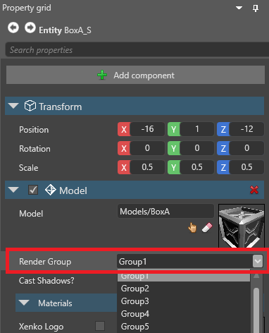

Render groups and masks
Warning
Приносим свои извинения за неудобства. Для этой страницы нет перевода на русский язык. Она будет отображаться на английском языке.
Intermediate Designer
With render groups and render masks, you can choose which parts of your scene are rendered by different cameras. For example, you can have a model be visible to Camera A but invisible to Camera B.
Set a render group
In the scene, select the entity with the component (such as a model or UI component) you want to add to a render group.
In the Property Grid, next to Render group, select the group you want the entity to belong to.

Set a render mask
The render mask filters which groups are rendered.
In the Asset View (in the bottom pane by default), double-click the Graphics Compositor asset.

The Graphics Compositor Editor opens.

Select the Entry points node.

In the Property Grid, expand the renderer you want to render the model.
Next to Render mask, click Change values and select the render groups you want the camera to render.